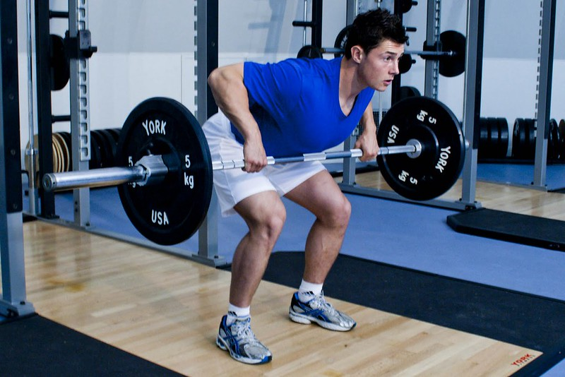
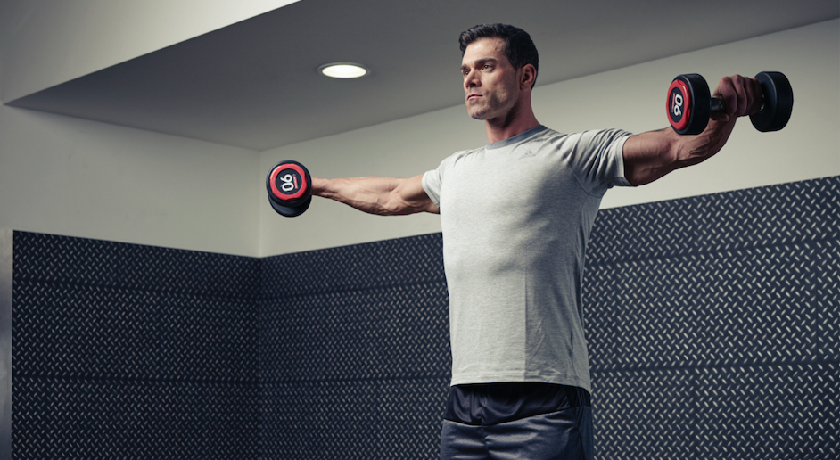
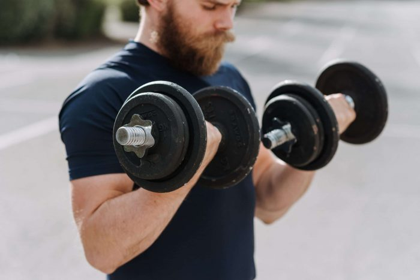
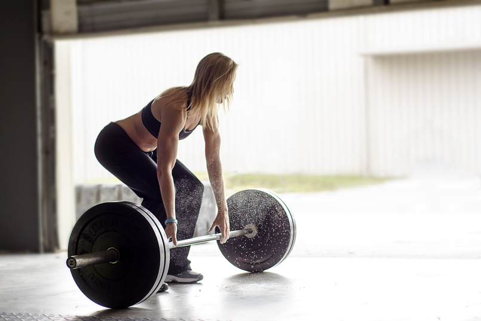
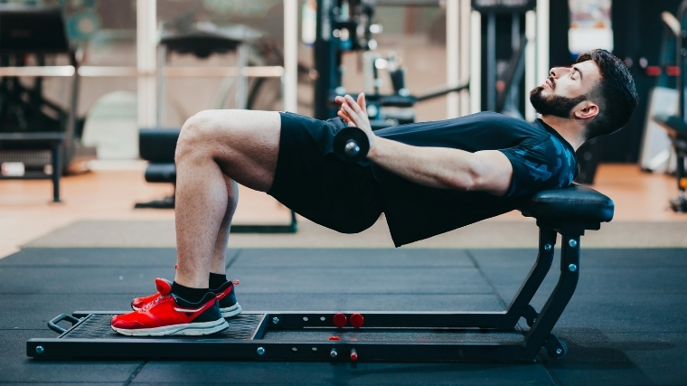
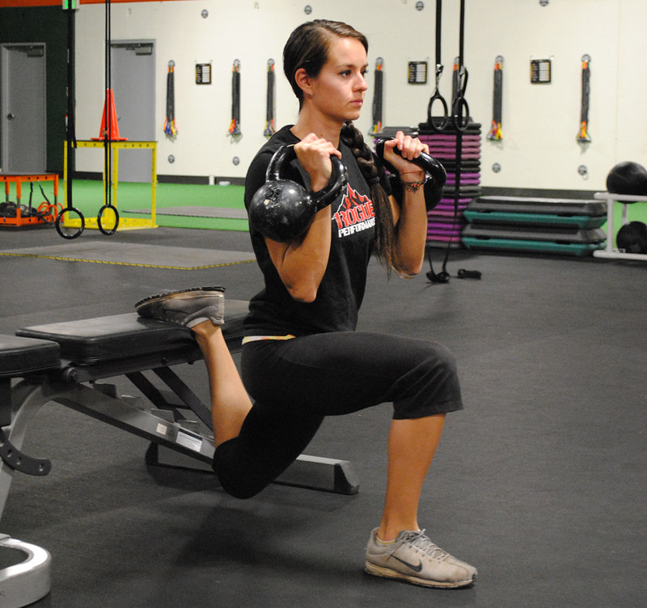
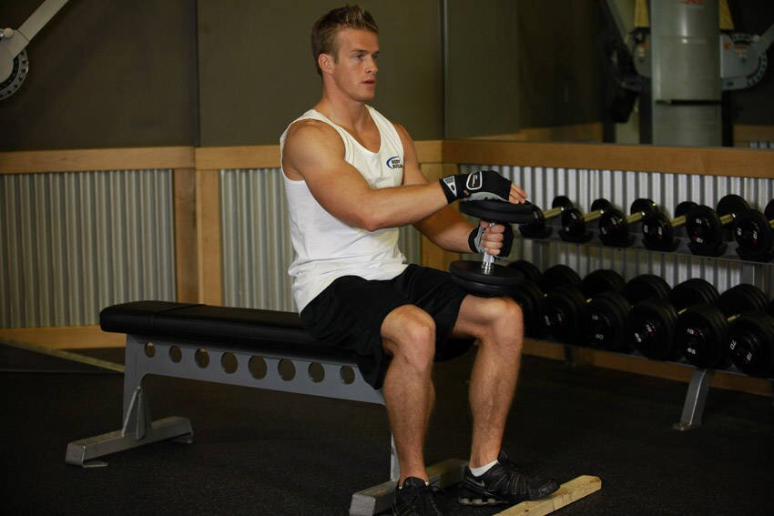

Bench Press
You can use either two
dumbbells, a barbell, or a smith machine to do your deadlifts. A flat bench is
also required to get started with this exercise. If it's ever your first time doing bench presses, it is
best to have a spotter with you if you ever begin to struggle.
- Lay yourself on a flat bench and grip the bar near shoulder width.
- Lift the barbell off the rack.
- Slowly lower the barbell above your chest with your arms slightly angled outward.
- Then push up and away from your chest. Completing one rep.
Notes: It's advised to start with lighter weights first. If the exercise becomes too
easy, then
add a few weights for difficulty.
Bent-Over Rows
Bent-over rows can be done with two dumbbells or with one barbell of your choice.
- Hold the barbell near and away from your knees.
- Slightly bend your body over at 45 degrees while keeping your back straight.
- Pull barbell towards your lower chest.
- Next, slowly lower the barbell back to its initial position.
Notes: Take your time lowering down the barbell and maintain a consistent motion when
pulling the barbell.

Dumbbell Lateral Raises
This exercise can be done while standing or seated.
- Have one dumbbell in each hand by your sides.
- Simultaneously raise both dumbbells up at shoulder height with your arms straight.
- Hold for a split-second.
- Lower the weights back down by your sides and repeat.
Notes: Refrain your body from bobbing up and down to make the exercise easier. You want
your shoulders to be doing the work, not the knees.

Dumbbell Curls
Doing dumbbell curls is great for building biceps and strength training for your arms. Bicep curls can also
be done with alternating your arms if you prefer
- With a pair of dumbbells, stand tall and straight.
- The dumbbells should be hanging by your sides with your arms relaxed, this is the initial position.
- Then bend your elbows, bringing the dumbbells close to your upper chest.
- Bend your arms back down with both dumbbells by your side.
Notes: Don't lock your arms when bringing the dumbbells back down by your side.

Deadlifts
Deadlifts can exercise multiple muscle groups in your lower body if you keep a perfect form throughout your
reps. Since the number of repetitions are low, the amount of sets you'll be doing is more than usual.
- The barbell should be near your shins, and your feet planted on the floor not to wide.
- Bend down and grasp the barbell as if you were in a squat position.
- Pull the bar up with your arms extended, bringing the barbell against your upper thighs.
- With your back straight, bend down and slowly place the barbell on the floor.
Notes: Keeping your back straight is very important, as you don't want your lower back to
be doing all the lifting.

Barbell Hip Thrusts
This exercise requires a bench for you to rest your back on.
- Lean your upper back on the edge of the bench while bending near the floor.
- The barbell should be resting on your hips and your hands holding onto the sides of the bar for
stability.
- Push your hips with the barbell upward, making your body parallel to the floor.
- Next lower your hips along with the bar back down near the floor.
Notes: Your shoulder blades should be resting on the bench and not your whole back.

Bulgarian Split Squats
You'll need a pair of dumbbells and a flat bench to elevate your foot behind you. Switch your feet after
completing your reps on each leg.
- Start by standing in front of a bench with a dumbbell in each hand.
- We'll start with the top of your right foot first on the bench.
- Then lower yourself down while bending your left knee.
- Use your left leg again to push yourself up, keeping your right foot on the bench all throughout.
Notes: Rely the leg that's planted on the floor to do all the pushing and use your foot
on the bench only for balance.

Seated Dumbbell Calf Raises
Lastly, we'll be using two dumbbells and a bench again for this exercise. You'll will also need something
like a board or platform to elevate your feet on.
- Sit on a bench and place both feet on a platform, your heels should be on the ground and your toes on
top.
- Hold two dumbbells comfortably sit on your thighs just near your knee.
- Keeping your toes on the platform, raise your heels off the ground and hold that position for a second.
- Slowly lower your heels down and repeat until reps are completed.
Notes: You want to extend your foot as much as possible to get the most for your
calves.
